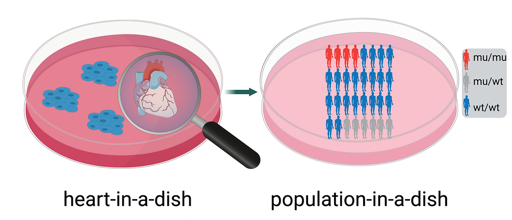

Population-in-a-dish

The "population-in-a-dish" approach uses a large collection of iPSC lines derived from a diverse group of patients to study diseases and drug effects at a population level. Each patient-derived iPSC line can be differentiated into relevant cell types, such as heart cells for studying cardiovascular diseases. By exposing these cells to drugs or other treatments, we can assess a range of responses across different genetic backgrounds. This enables the identification of commonalities and differences in how genes contribute to disease mechanisms and treatment outcomes. The method mimics population-level studies but with the added benefit of controlled, in vitro conditions, significantly advancing personalized medicine.